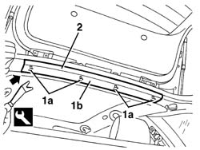

7040H12 Roof panel REAR TRIM - R.R.
- Path
- Procedures > 70 FITTINGS > 7040 BODYSHELL INTERIOR TRIMS AND FITTINGS > 7040H roof panel lining > 7040H12 Roof panel REAR TRIM - R.R.
- Kind
- repair procedure (removal / refitting; the operation number is the code)
- Applies to
- all engines; all production periods
- Interactive page
- https://sloeber94.github.io/elrnDB-a156/en/#/3238836
Applies to: all engines; all production periods; only with equipment: Station Wagon
 Removing
Removing
 Refitting
RefittingOpen the tailgate.
1. Undo the inner retainers (1a) of trim (1b) using the appropriate tool.
 | Name | Country |
|---|---|---|
1 | Scraper blade | 1.823.015.000 |
2. Save the trim.

Applies to: all engines; all production periods; only with equipment: Station Wagon
Refitting
RemovingCheck that the trim is undamaged.
Position the trim and do up the iinner retainers.
Topics that link to this page (9)
- 7015A14 tailgate - adjust centring and profile - includes hinge and compartment seal adaptation
- 7015A24 tailgate hinges - repair or replace with tailgate removed
- 7035C10 Third SIDE WINDOW (one), left or right (bonded type) - R.R. - Includes. cleaning edges of window and housing in bodyshell
- 7035C14 fixed rear side window one lh or rh r r includes cleaning of housing
- 7040H10 roof panel lining - r r
- 7040H16 roof panel lining - r r
- 7040H62 rear window surround trim one lh or rh r r
- 7095B66 TAILGATE LEFT integrated WIRING - R.R.
- 7095B68 TAILGATE RIGHT incorporated WIRING - R.R.